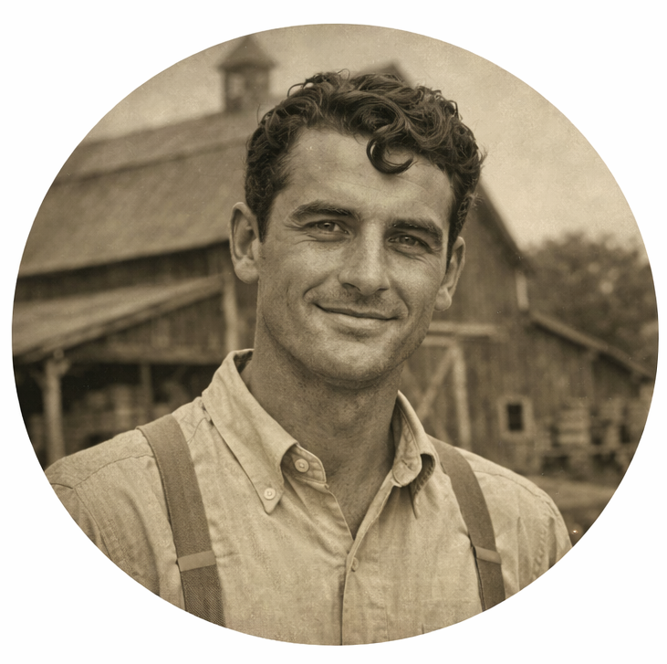
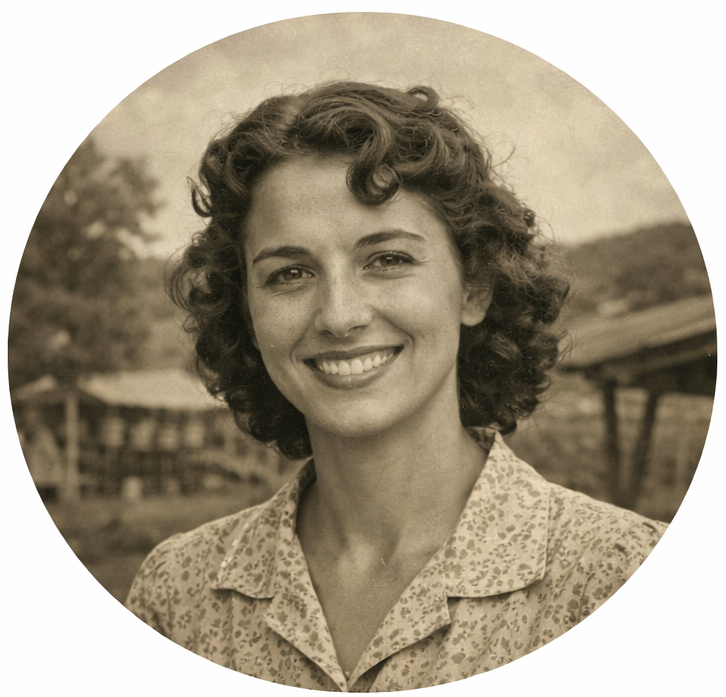

For more than three generations, Hollow Creek Farm has welcomed families to slow down, explore the fields, and enjoy the best of each season. What began as a small vegetable farm in 1962 has grown into a year- round destination for fresh produce, farm store goods, seasonal events, and family traditions.

